Backend
Spring Boot 3.5.14, Java 21, PostgreSQL, Flyway
Rapport d'inspection complet fondé sur le dépôt, les modules backend, les clients web et Android, les migrations, les tests et des captures live générées depuis localhost:8080 le 17 juin 2026.
Réalisé par : BAGHDAD Mohamed et BAAKKA Monssef
Type : Plateforme éducative marocaine web/mobile
EduLife répond à un problème clair : l'apprentissage numérique est souvent dispersé, peu guidé et rarement validé par une évaluation sérieuse. Le projet met donc au centre un parcours simple : découvrir un cours, s'inscrire, étudier, passer un examen final, puis obtenir un certificat vérifiable.
Le dépôt inspecté révèle un backend modulaire crédible, une application web réellement branchée sur un backend vivant et une application Android alignée avec les choix d'architecture annoncés. Le projet n'est pas fini, mais il dispose déjà d'une base robuste et cohérente.
L'apprenant navigue souvent entre vidéos, PDFs et groupes de discussion sans ordre stable, sans suivi fiable et sans validation finale crédible.
EduLife transforme cet ensemble dispersé en un parcours cohérent avec rôles, progression, évaluation, certificats et tableaux de bord dédiés.
Le projet tire parti de Firebase pour l'identité, mais conserve la logique métier et la sécurité fine dans le backend. C'est une séparation saine pour un MVP.
Le backend Spring Boot organise la logique par domaines : authentification, profils, cours, inscriptions, progression, examens, certificats, groupes, analytics, gamification et administration. Ce choix évite la complexité inutile de microservices tout en gardant des frontières techniques propres.
| Aspect | Constat |
|---|---|
| Stack | Spring Web, Security, JPA, Validation, PostgreSQL, Flyway, Firebase Admin, Bucket4j |
| Modules | `account`, `admin`, `advisor`, `analytics`, `auth`, `certificates`, `courses`, `enrollments`, `exams`, `groups`, `profiles`, `progress`, `roles`, `teacherrequests`, `users`... |
| Sécurité | Validation des tokens Firebase, RBAC, filtres de sécurité, ownership checks |
| Certificats | PDF backend, hash de vérification publique, génération après réussite à l'examen |
Les réponses correctes d'examen restent côté serveur, ce qui évite une logique client manipulable.
La gouvernance du projet verrouille un seuil de réussite à 80%, mais une capture live de l'examen Digital Skills affiche 70%. Cette divergence doit être harmonisée.
L'application Android suit un MVVM clair : fragments pour l'interface, ViewModel pour l'état, repositories pour l'accès aux données et Retrofit/OkHttp pour la couche réseau. Le tout reste lisible et cohérent avec un MVP mobile-first.
La surface web repose sur React 19, TanStack Start et un client API typé. Les rôles ne sont pas gérés seulement par l'affichage : des guards côté interface complètent le contrôle serveur et séparent les portails étudiant, enseignant, groupe et admin.
Dashboard, catalogue, cours, leçons, examens, certificats, planner, analytics, gamification et advisor sont visibles en live.
Teaching Studio, analytics enseignant, groupes, approbations, dashboard admin et teacher requests sont opérationnels.
| Bloc | État | Commentaire |
|---|---|---|
| Authentification | Implémenté | Firebase + synchronisation backend + rôles |
| Catalogue et progression | Implémenté | Parcours étudiant cohérent entre dashboard, cours et leçons |
| Examens et certificats | Implémenté | MCQ corrigé serveur, certificat PDF et vérification publique |
| Teacher CMS | Implémenté partiellement | Édition de cours, sections, leçons et examen, mais pas un CMS web exhaustif |
| Analytics, planner, gamification, advisor | Implémenté | Valeur ajoutée déjà visible, avec une profondeur variable selon les rôles |
| Admin et group admin | Implémenté partiellement | Portails présents, mais certains écrans de gestion fine restent absents |
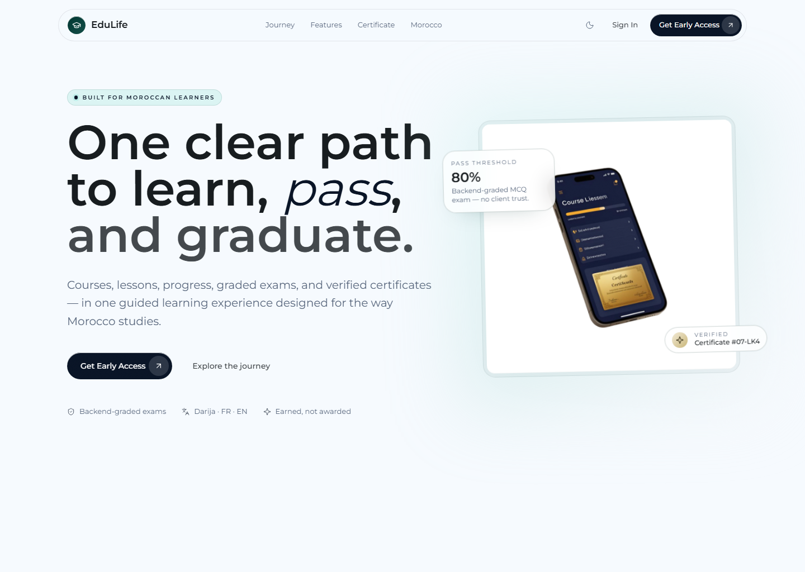
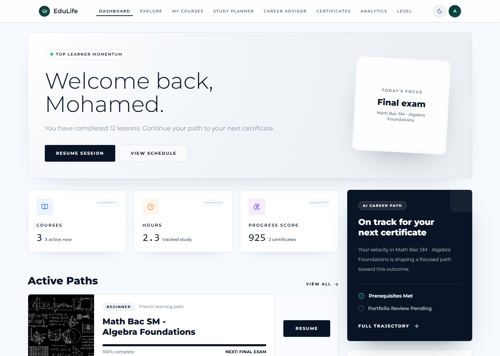
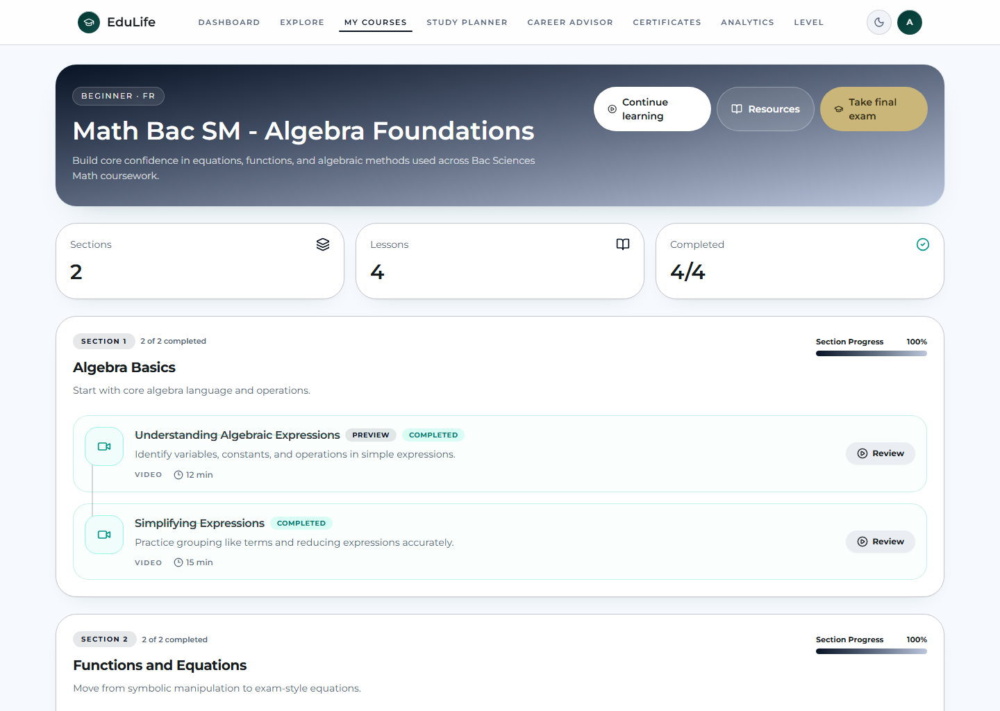
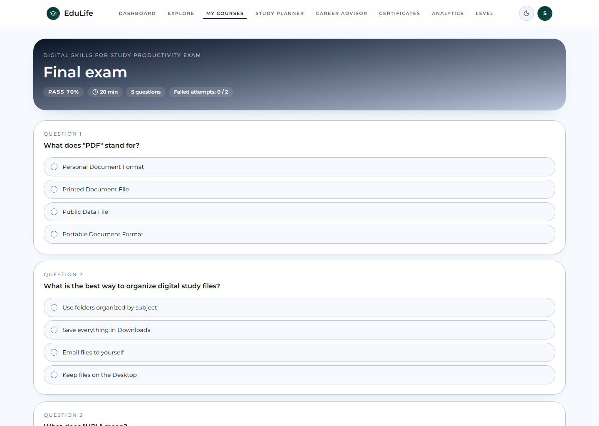
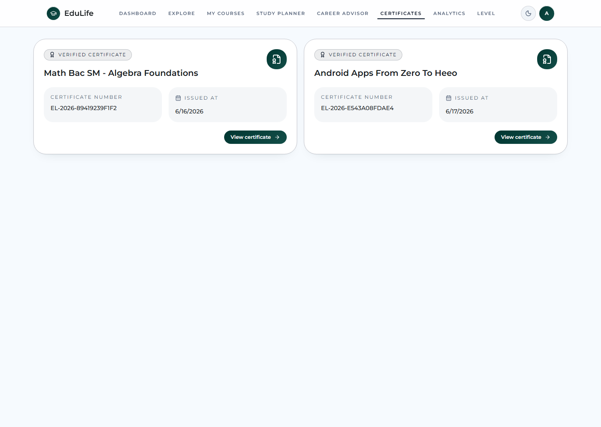
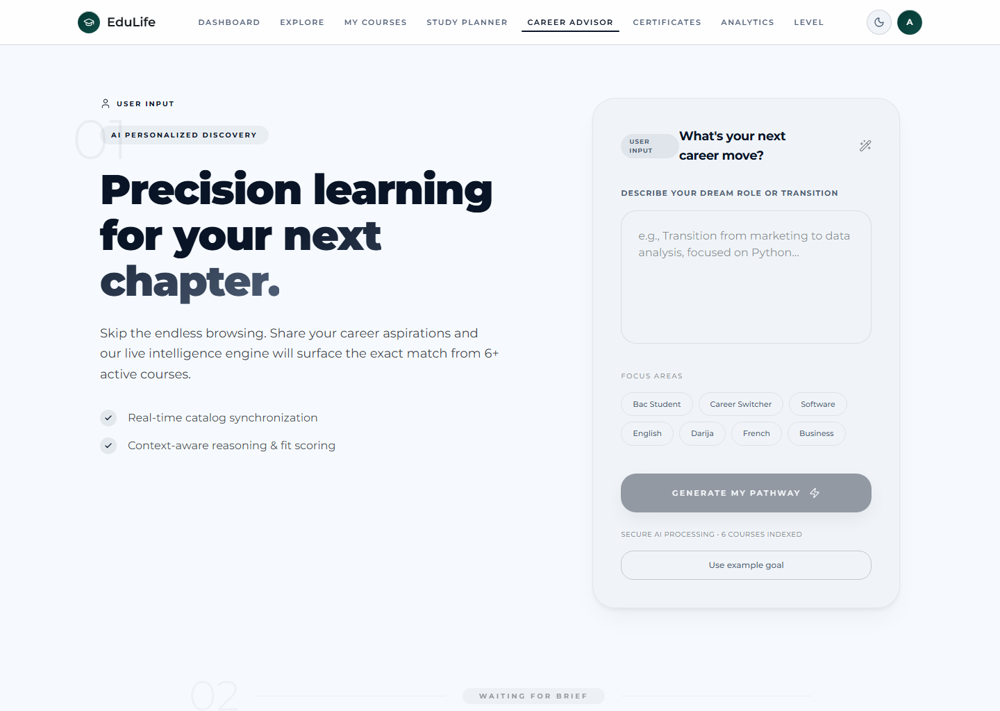
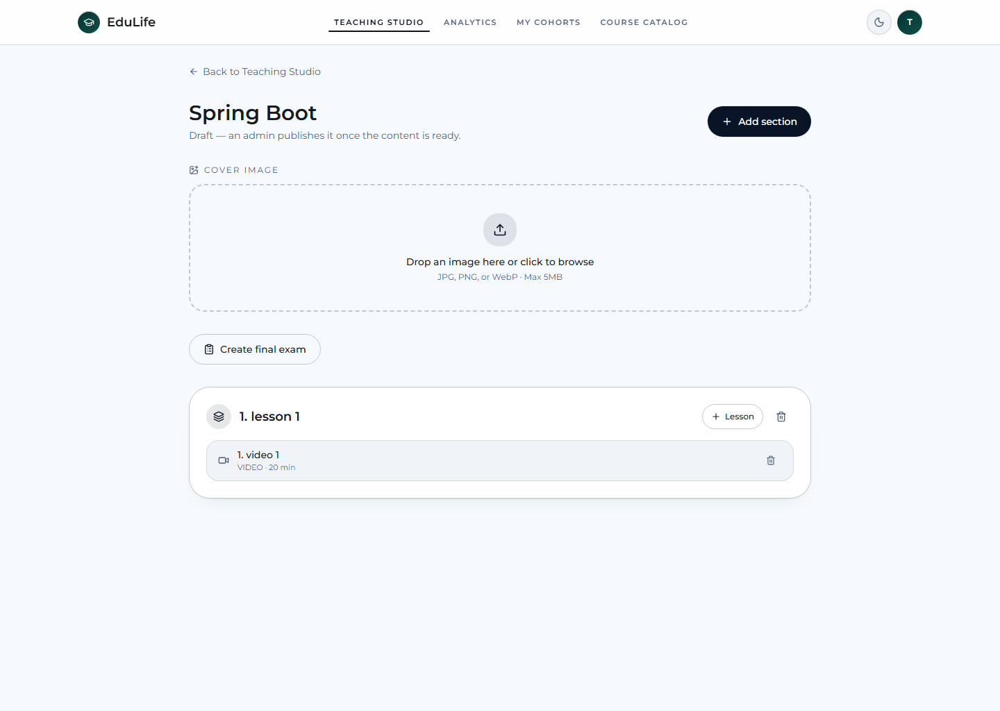
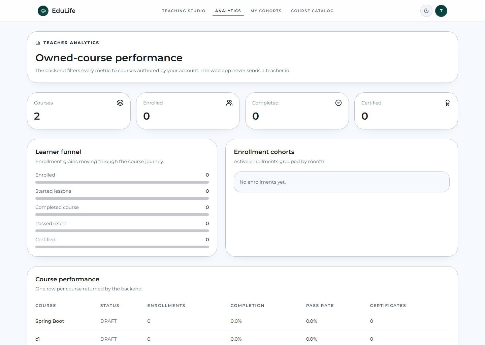
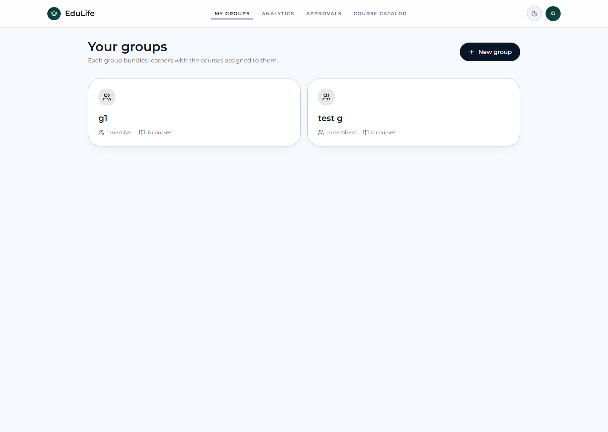
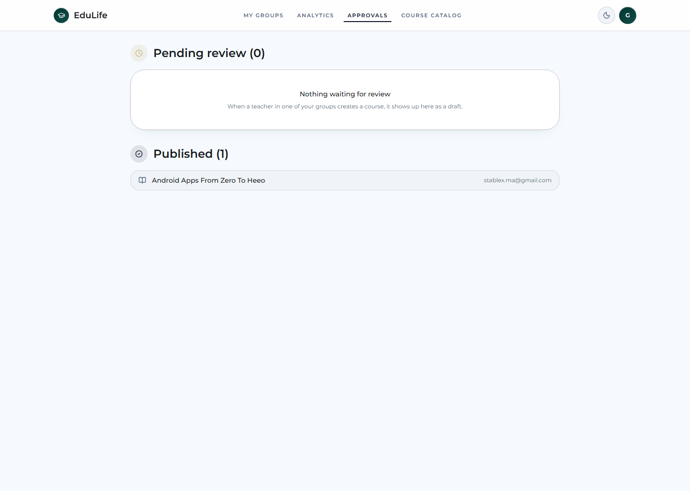
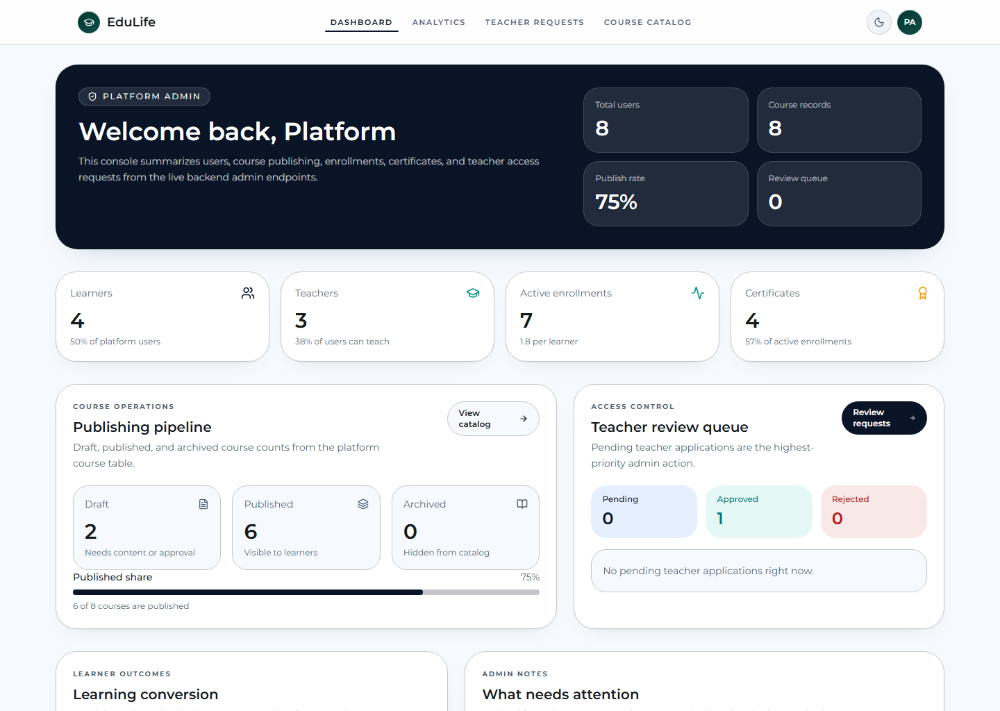
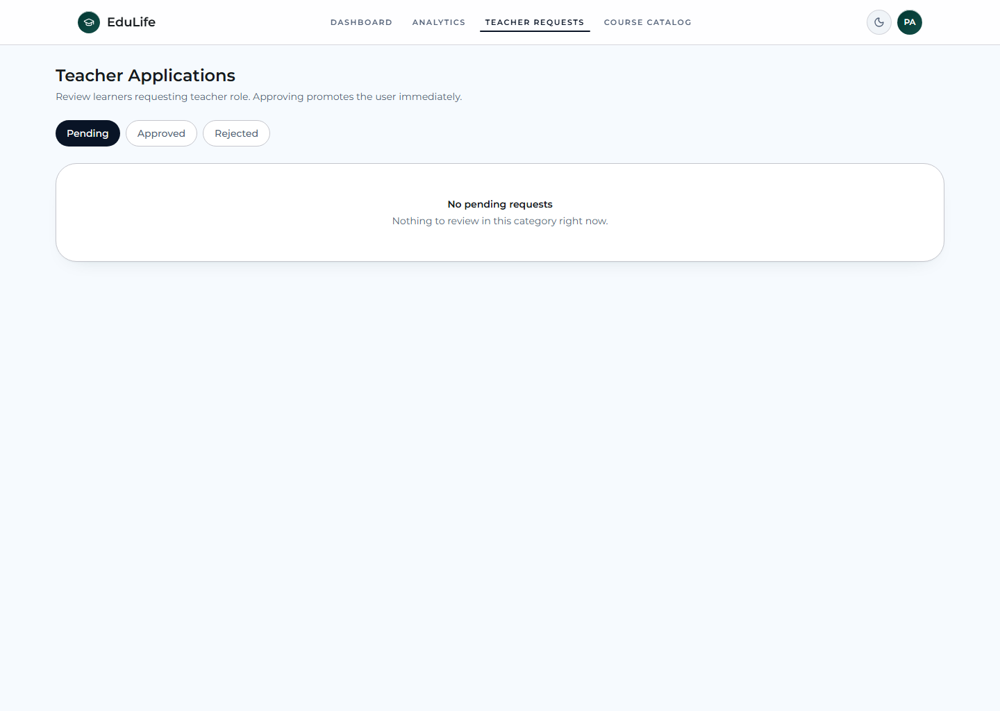
| Commande | Résultat | Détail |
|---|---|---|
node docs/2026-06-17-live-screenshot-capture.mjs |
OK | 31 captures live générées depuis localhost:8080 |
cd backend && .\mvnw.cmd test |
KO partiel | 39 suites, 238 tests, 10 erreurs concentrées dans AuthSyncControllerTest |
cd guided-journey-lab && npm run build |
OK | Build client + SSR réussi |
cd guided-journey-lab && npm run lint |
KO | 6311 erreurs majoritairement liées à Prettier et aux fins de ligne |
.\gradlew.bat :app:assembleDebug |
OK | Build Android debug réussi |
La suite `AuthSyncControllerTest` échoue lors du nettoyage de la base de test avec une violation de clé étrangère entre `users` et `courses`.
Le lint ne reflète pas une panne fonctionnelle du produit, mais il indique une dette importante de formatage et de standardisation des fichiers.
| Écran demandé | Statut | Raison |
|---|---|---|
| Création de cours enseignant dédiée | Non capturée séparément | Le web expose surtout une page de gestion/édition via `/teach/$courseId`. |
| Monitoring étudiant enseignant dédié | Non capturé séparément | La supervision passe par les analytics, sans route roster dédiée observée. |
| Gestion utilisateurs admin dédiée | Non capturée | Aucune route web dédiée n'a été repérée pendant l'inspection. |
| Modération certificats admin | Non capturée | Aucune page dédiée identifiée côté web. |
| Pages séparées pour la gestion fine groupe | Non capturées séparément | Le détail groupe et les approbations agrègent l'essentiel des actions visibles. |